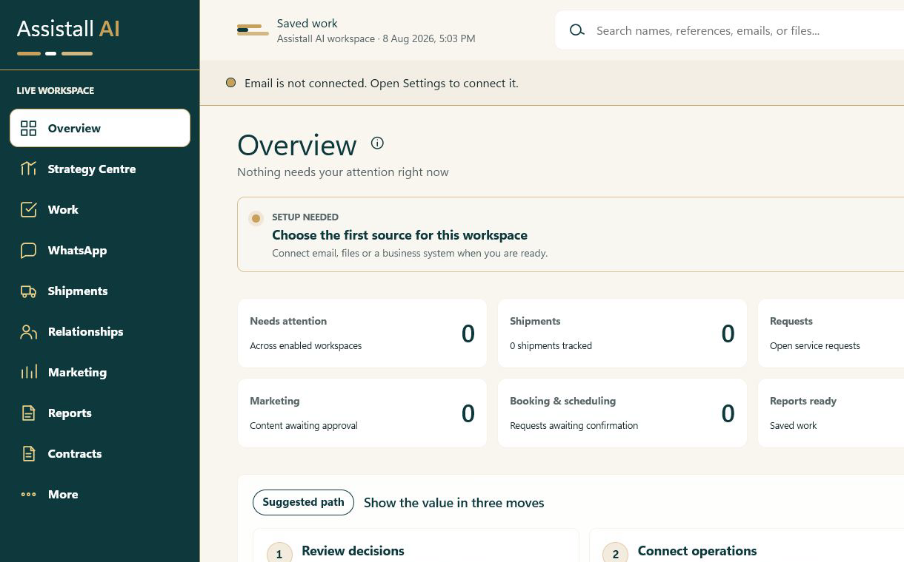

Microsoft 365 and Outlook
Setup-dependent
AI support for everyday business work
Assistall brings your email, files, reports, contracts, shipments and business systems into one clear workspace. It prepares the next step. Your team checks it.
Your data stays under your control. Nothing is sent without your approval.
One clear flow
Email, files, contracts and business systems.
Important changes and requests come forward.
Replies, reports and review work get ready.
People approve what moves forward.

What Assistall can do
Connections
Every connector says how it works: live connection, imported source or setup-dependent.
Setup-dependent
Setup-dependent
Imported source
Setup-dependent
Setup-dependent
Imported source
Imported source
Imported source
Prepared outputsExcel · Word · PDF · PowerPoint reports
Real product
Follow real business work from the source to a clear next step your team can check.
Service_Agreement.pdf from Northstar Supplies.
Renewal: 30 September. Payment term changed from 30 to 45 days.
Evidence: source pages 1 and 8.
Highlights the renewal date and changed payment term for comparison.
Links each finding back to the relevant source page.
The contract changes are collected for a person to check.
Review contractDelivery 1842 has a promised arrival of 18 August.
Evidence: carrier record.
Detects that the carrier status changed to customs review.
Keeps the promised arrival and carrier record together.
The delivery change is ready for a person to assess.
Review delivery updateEmail from Maya · Clear Route requesting revised delivery timing.
Evidence: shipment record for Delivery 1842.
Hi Maya, the shipment record for Delivery 1842 now shows customs review. We are checking the revised arrival timing with the carrier.
We will update you when the carrier confirms the next delivery date. This proposed reply cites the shipment record as its evidence.
A person approves the proposed reply; nothing is sent automatically.
Approve reply Edit RejectWhy it matters
Spend less time searching, copying and chasing updates. Spend more time with clients, building trust, finding sales and growing the business.
Before Search, copy and chase updates
With Assistall Review work that is ready
Illustrative workday — not a performance claim.
Control and trust
Assistall works inside clear permission boundaries. Your team reviews important work before anything is sent or changed.
Choose what Assistall can access. Keep company work inside the boundaries you set.
Optional local AI and on-device speech can keep selected work on your own device.
Assistall prepares the next step. Your team checks it before anything important happens.
Tell us what slows your team down. We will show you how Assistall can help.